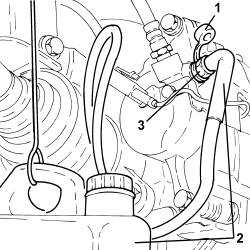
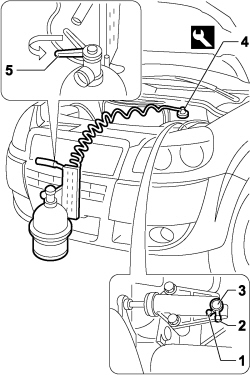

0010T62 BRAKE and/or CLUTCH FLUID - Replace. fluid - Includes. washing pipes and bleeding air
- Path
- Procedures > 00 MAINTENANCE > 0010 NEW VEHICLES AND MAINTENANCE > 0010T VEHICLE FLUIDS > 0010T62 BRAKE and/or CLUTCH FLUID - Replace. fluid - Includes. washing pipes and bleeding air
- Kind
- repair procedure (removal / refitting; the operation number is the code)
- Applies to
- all engines; all production periods
- Interactive page
- https://sloeber94.github.io/elrnDB-fDbl/en/#/2584126
Applies to: engines: 1.2 8v, 1.6 16v, 1.3 JTD 16V, 1.9 JTD 8V, 1.9 DIESEL; all production periods
Undo the plug on the brake fluid reservoir.
Draw off the fluid in the brake fluid reservoir with a suitable syringe.
Position containers to collect the brake fluid under the front and rear wheels.
Open the bleed valves on the front brake callipers and the rear wheel cylinders so that the fluid in the circuit emerges.
Close the valves on the front brake callipers and rear brake cylinders.
Refill the hydraulic brake circuit with the required fluid.
Type | Component | Description | Qty. | |
|---|---|---|---|---|
- | Fluid [I] | BRAKE-CLUTCH HYDRAULIC SYSTEM | TUTELA TOP 4 | 0.4 |
Applies to: engines: 1.2 8v, 1.6 16v, 1.3 JTD 16V, 1.9 JTD 8V, 1.9 DIESEL; all production periods; only with equipment: ABS
Refill the hydraulic brake circuit with the required fluid.
Type | Component | Description | Qty. | |
|---|---|---|---|---|
- | Fluid [I] | BRAKE-CLUTCH HYDRAULIC SYSTEM | TUTELA TOP 4 | 0.45 |
Applies to: engines: 1.2 8v, 1.6 16v, 1.3 JTD 16V, 1.9 JTD 8V, 1.9 DIESEL; all production periods
Check the level and top up the brake fluid if necessary
Op. 0010T64 BRAKE AND/OR CLUTCH FLUID CHECK LEVEL AND TOP UP AS NECESSARY.
Bleed the fluid from the hydraulic brake system
Applies to: engines: 1.4 8v; production: da 12/03; only with equipment: MY 2005
Position the vehicle on a lift.
1. Remove the protective cap from the bleed valve on one brake caliper.
2. Connect the recovery device (pipe and reservoir) to the bleed valve on the brake calliper.
3. Open the bleed valve on the brake caliper.
Operate the brake pedal until all the fluid emerges.
Repeat the above operations for the remaining front brake calliper and the rear brake cylinders.

Applies to: engines: 1.4 8v; production: da 12/03; only with equipment: MY 2005
Op. 5530B52 BATTERY SUPPORT/DRIP TRAY - R.R.
1. Remove the cap from the bleed valve.
2. Connect the recovery device (pipe and reservoir) to the bleed valve on the clutch slave cylinder.
3. Undo the bleed screw and fully drain the hydraulic brake system.
4. Cnnect the tool to the brake/clutch fluid reservoir.
Description | Code | |
|---|---|---|
4 | Device | 1.806.097.000 |
5. Slowly open the device reservoir cock and refill the brake/clutch systems with the recommended fluid.
Type | Component | Description | Qty. | |
|---|---|---|---|---|
5 | Synthetic fluid (kg) | BRAKE-CLUTCH HYDRAULIC SYSTEM | TUTELA TOP 4 | 0.55 |

Applies to: engines: 1.4 8v; production: da 12/03; only with equipment: MY 2005
Wait for all the air in the hydraulic brake-clutch system to escape.
Close the bleed valves on the rear brake callipers/cylinders and fit protective plugs.
Tighten the bleed screw.
Remove the fluid recovery device.
Place the cap in its housing on the bleed valve.
Remove the equipment.
Description | Code | |
|---|---|---|
- | Device | 1.806.097.000 |
Op. 5530B52 BATTERY SUPPORT/DRIP TRAY - R.R.
Remove the vehicle from the lift.
Check that the clutch disengages properly and that the gears engage and that the brake system is efficient.
Topics linked from this page (4)
- 0010T64 brake and or clutch fluid check level and top up as necessary
- 0010T65 hydraulic brake system bleed air
- 5530B10 battery - r+r
- 5530B52 Battery DRIP TRAY/SUPPORT - R.R.